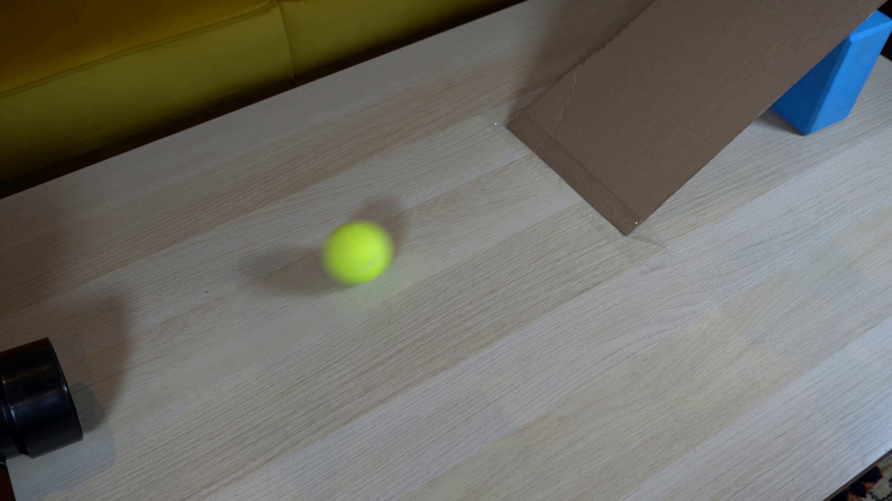
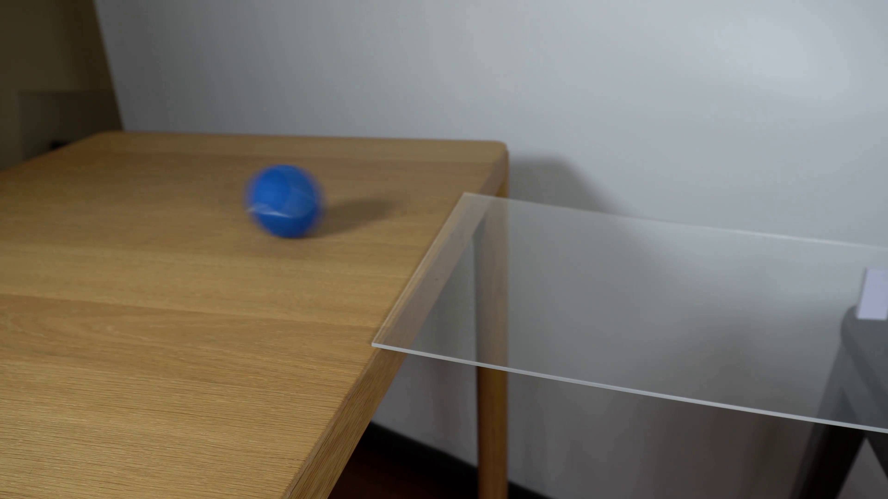
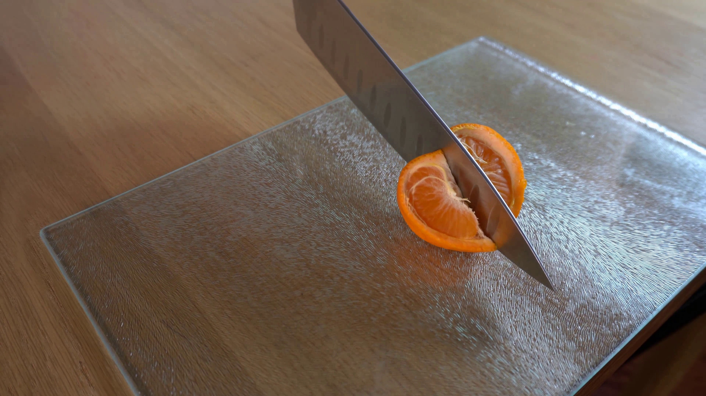
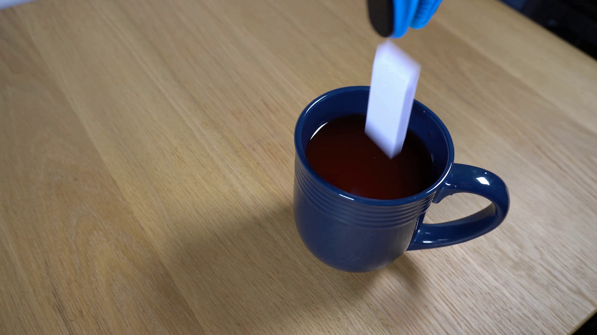
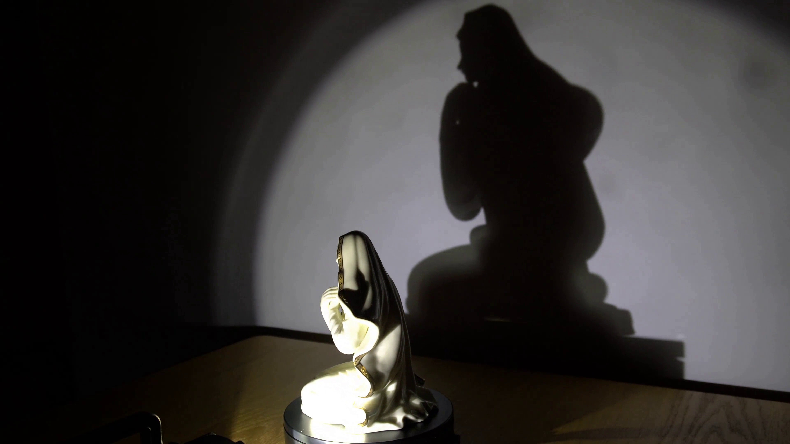
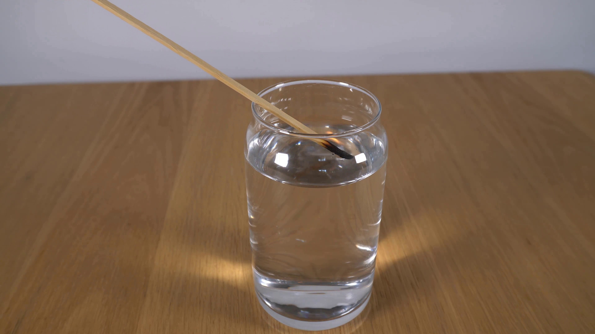
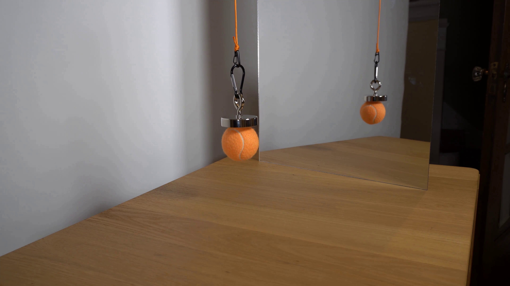
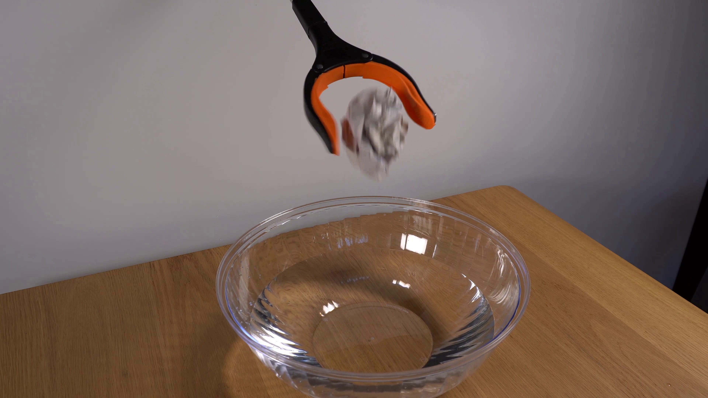
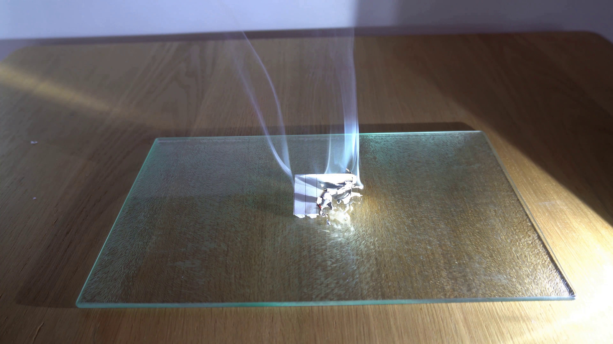
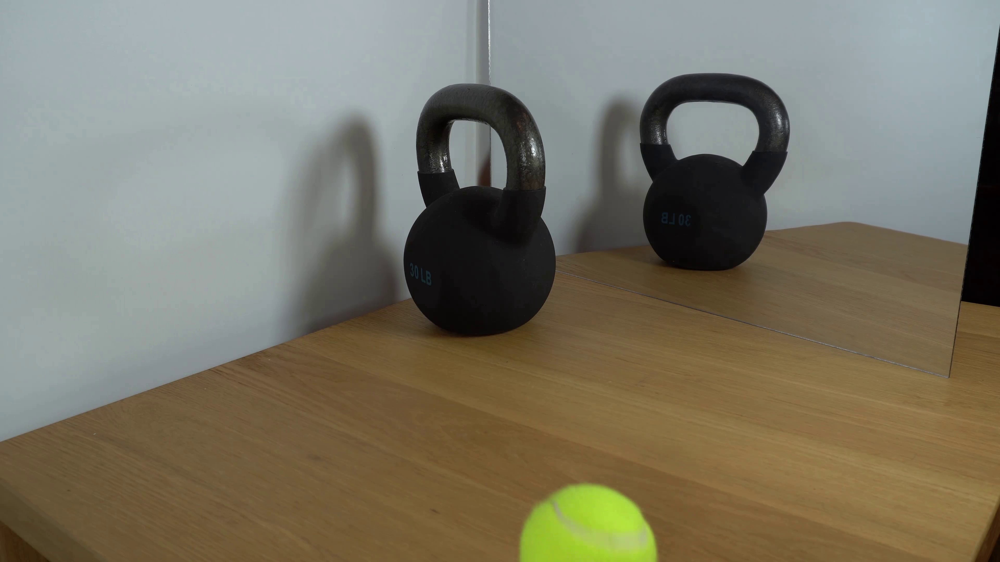

A domino dropped into liquid
PromptA grabber tool holding a white domino drops the domino into a dark-colored liquid in a blue mug that is on a wooden surface. Static shot with no camera movement.
Try another prompt or benchmark.
T2V comparisons
From a written prompt to a moving scene. Compare generated videos across three benchmarks.
Object interactions and physical events.
PromptA grabber tool holding a white domino drops the domino into a dark-colored liquid in a blue mug that is on a wooden surface. Static shot with no camera movement.
PromptA yellow rubber duck is positioned in the middle of a line of black and white dominoes on a wooden table. A stick attached to a black rotating platform rotates clockwise and knocks the first domino block. Static shot with no camera movement.
Everyday motion, human actions, and physical interactions.
Original benchmark promptA person uses a low heat setting on the hairdryer to gently dry their fine hair.
Original benchmark promptA child somersaults on a large bouncy castle, their body rotating fully in the air.
Original benchmark promptA canoeist uses a single-bladed paddle to propel their canoe across a lake, the paddle's movement visible against the still water.
Original benchmark promptTwo jetskis race side-by-side, their wakes colliding in a visible spray of water.
Original benchmark promptA parasailer, harnessed to a bright orange parachute, is pulled along a calm ocean surface by a speedboat.
Original benchmark promptA coin is flung into the air and caught in a metal cup.
Scenes, actions, object composition, and spatial relationships.
PromptA person is bending metal
PromptA person is ironing
Prompta chair and a couch
Prompta knife and a tv
Prompta skateboard and a surfboard
Prompta backpack
Prompta handbag
PromptA beautiful coastal beach in spring, waves lapping on sand by Vincent van Gogh
PromptA boat sailing leisurely along the Seine River with the Eiffel Tower in background by Vincent van Gogh
PromptA panda standing on a surfboard in the ocean in sunset.
PromptSnow rocky mountains peaks canyon. snow blanketed rocky mountains surround and shadow deep canyons. the canyons twist and bend through the high elevated mountain peaks.
Promptamusement park
Prompta sports ball on the right of a baseball bat, front view
Promptan orange on the top of a carrot, front view
I2V comparisons
From an input image to a physical event. Compare the conditioning frame, reference, and generated videos.
Image-conditioned physical events, with reference videos.
PromptStatic locked-off single-shot with fixed frame throughout filmed with constant framerate in real-time. The scene shows a realistic scientific demonstration. The scene only contains the described setup and actions. A simple ramp made of cardboard, propped up by a blue block on a light-colored wooden table. There's a black pipe to the left of the frame that directly points towards it. The yellow tennis ball rolls straight out of the black pipe onto the ramp.

Image input ↗PromptStatic locked-off single-shot with fixed frame throughout filmed with constant framerate in real-time. The scene shows a realistic scientific demonstration. The scene only contains the described setup and actions. A piece of clear glass resting on the edge of a light-colored wooden table against a plain white wall. The blue tennis ball rolls from the wooden table over the glass.

Image input ↗PromptStatic locked-off single-shot with fixed frame throughout filmed with constant framerate in real-time. The scene shows a realistic scientific demonstration. The scene only contains the described setup and actions. One half of a tangerine has been placed on a glass cutting board. The knife slices through the tangerine.

Image input ↗PromptStatic locked-off single-shot with fixed frame throughout filmed with constant framerate in real-time. The scene shows a realistic scientific demonstration. The scene only contains the described setup and actions. The mug is sitting on a wooden surface. The blue-black grabber tool drops the white ceramic domino into the mug that is filled with a dark-colored liquid.

Image input ↗PromptStatic locked-off single-shot with fixed frame throughout filmed with constant framerate in real-time. The scene shows a realistic scientific demonstration. The scene only contains the described setup and actions. The small porcelain statue sits on the black, clockwise-rotating platform, and the spotlight points toward the porcelain statue. The small porcelain statue rotates clockwise on the black platform while the spotlight casts a large shadow on the wall behind it.

Image input ↗PromptStatic locked-off single-shot with fixed frame throughout filmed with constant framerate in real-time. The scene shows a realistic scientific demonstration. The scene only contains the described setup and actions. The lit match is being lowered into the glass of water.

Image input ↗PromptStatic locked-off single-shot with fixed frame throughout filmed with constant framerate in real-time. The scene shows a realistic scientific demonstration. The scene only contains the described setup and actions. The tennis ball attached to a magnet that hangs from an orange cord was hovering in the air in front of the mirror. The mirror creates the illusion of two tennis balls. The tennis ball hanging in front of the mirror is slowly lowered.

Image input ↗PromptStatic locked-off single-shot with fixed frame throughout filmed with constant framerate in real-time. The scene shows a realistic scientific demonstration. The scene only contains the described setup and actions. The orange-black grabber tool is suspended over the bowl of water on a wooden table. The orange-black grabber tool releases the crumpled piece of paper over the bowl of water.

Image input ↗PromptStatic locked-off single-shot with fixed frame throughout filmed with constant framerate in real-time. The scene shows a realistic scientific demonstration. The scene only contains the described setup and actions. The piece of folded paper sits on a glass cutting board. The piece of folded paper is burning while white smoke is emitting from it.

Image input ↗PromptStatic locked-off single-shot with fixed frame throughout filmed with constant framerate in real-time. The scene shows a realistic scientific demonstration. The scene only contains the described setup and actions. The 30lb kettlebell sits next to a mirror that reflects the kettlebell on a wooden table. The tennis ball rolls slowly towards the 30lb kettlebell next to a mirror and hits the kettlebell.

Image input ↗